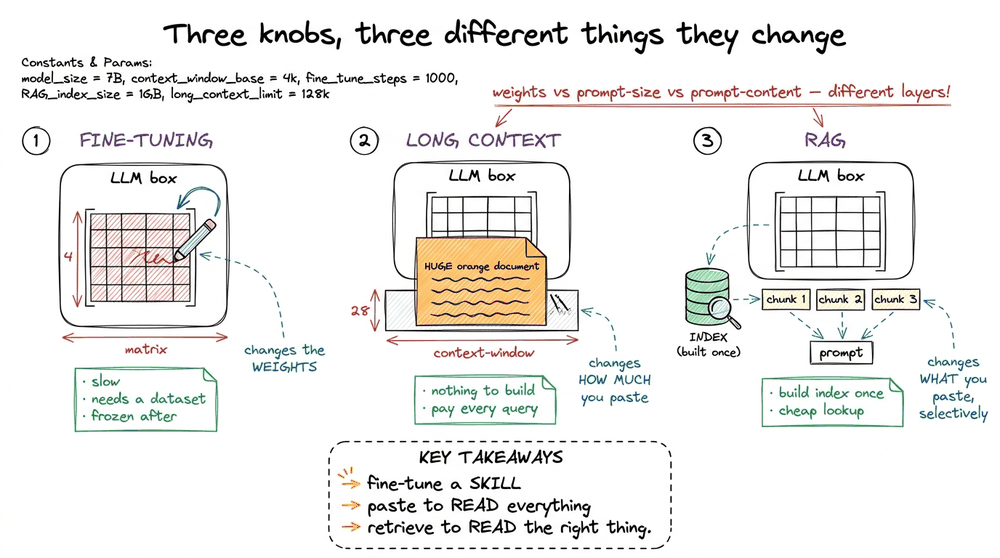
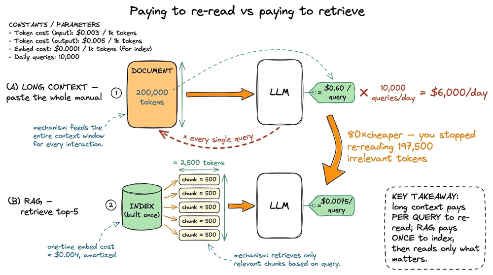
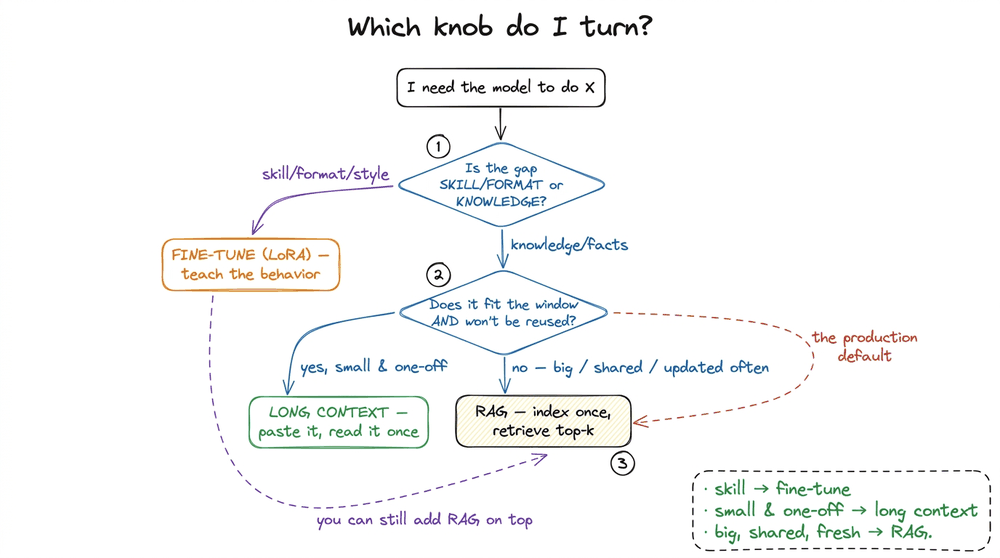
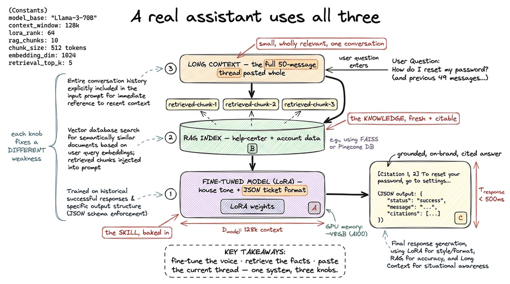
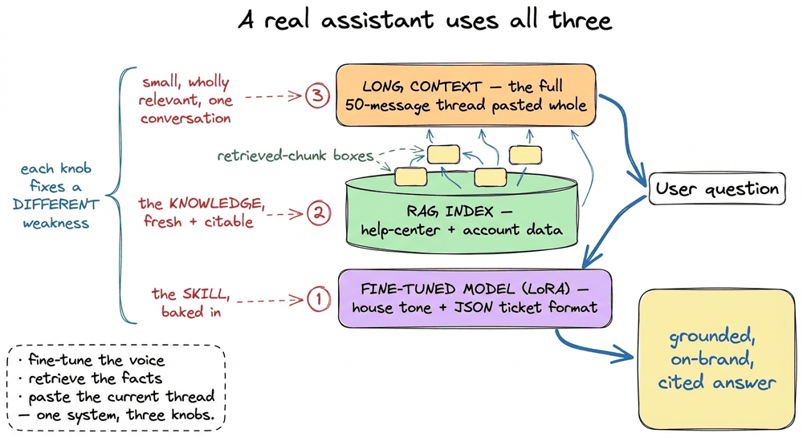

RAG vs Fine-tuning vs Long Context
📝 23 annotationsRAG vs Fine-tuning vs Long Context
The last chapter, what is retrieval-augmented generation, promised that RAG and fine-tuning are different knobs and left the full tradeoff for here. But there is a third knob that has quietly grown into the room, and it changes the whole conversation: long context. Context windows that were 4,000 tokens in 2022 are now hundreds of thousands, and a few models advertise a million or more. So a fair question — one I get in every workshop — is: if I can just paste all my documents into the prompt, why build a retrieval pipeline at all?
This chapter is the honest answer. Three options, one decision. I want to give you a way to reason about it that survives contact with a real budget, a real latency SLA, and a real corpus that will not fit anywhere. So let me define the three knobs precisely, then run the napkin arithmetic that usually settles the argument, then show why the grown-up answer is almost never "pick one."
Three knobs, three different things they change
Line the three up and notice they act on completely different parts of the system.
Fine-tuning changes the weights. You take a base model and keep training it on your own examples so it internalizes a skill, a format, or a style — how to speak like your support team, how to always emit valid JSON, how to reason through your kind of problem.11 In practice almost nobody does full fine-tuning anymore. The standard is parameter-efficient fine-tuning, usually LoRA (Low-Rank Adaptation), which freezes the base weights and trains a tiny pair of low-rank matrices — often under 1% of the parameters. It is dramatically cheaper and the adapter is a small file you can swap in and out. When I say "fine-tune" in this chapter, assume LoRA unless noted. It is a build-time investment: slow, you need a dataset, and once it is done the knowledge is baked in and frozen until you retrain.
Long context changes how much you can stuff into one prompt. You do not touch the weights and you do not build an index — you just paste the relevant documents directly into the context window and let the model read all of it, every single query. It is the brute-force option, and its appeal is that there is almost nothing to build.
RAG changes what you put into the prompt each query, selectively. Instead of pasting everything, you retrieve the handful of chunks that matter for this question and paste only those. It is the middle path: an index you build once offline, then a cheap lookup at query time.

figure rendering · The three approaches act on different layers: fine-tuning edits the weThe one-line separator to carry: fine-tune to change how the model behaves; use context (long or retrieved) to change what it knows. Fine-tuning is about skill; long context and RAG are both about knowledge — and the choice between those two is mostly an economics problem. Which is exactly where the argument gets decided.
The napkin arithmetic that settles "why not just paste everything?"
Let me make the long-context temptation concrete and then watch it fall apart on cost. Suppose your knowledge base is a product manual: 200,000 tokens total.2 A rough conversion to keep in your head: 1 token ≈ 0.75 English words, so 200,000 tokens is roughly 150,000 words — a 500-ish page book. The exact ratio depends on the tokenizer and drifts higher for code, non-English text, and rare words. It fits inside a modern long-context model, so the naive plan is: paste all 200,000 tokens in front of every user question and let the model find the answer itself.
Now price one query. Say input tokens cost $3 per million — a representative mid-tier rate. Pasting the whole manual is 200,000 input tokens per question:
long-context cost per query = 200,000 tokens × ($3 / 1,000,000) = $0.60Sixty cents a question, before the model writes a single word of output. Ten thousand questions a day is $6,000 a day just to re-read the same manual over and over.
Now the RAG version. You embed the manual once offline, and at query time you retrieve, say, the top-5 chunks of 400 tokens each — 2,000 tokens of context — plus a ~500-token prompt scaffold. That is ~2,500 input tokens per query:
RAG cost per query = 2,500 tokens × ($3 / 1,000,000) = $0.0075Three-quarters of a cent. Same model, same question, 80× cheaper — because you stopped paying to re-read 197,500 tokens the question never needed.33 The one-time indexing cost is real but small and amortized: embedding 200,000 tokens with an embedding model at, say, $0.02 per million tokens is about $0.004 — once, ever, until the manual changes. Compare that to $0.60 per query. The build cost is a rounding error against the query savings.

figure rendering · Pasting the full manual costs $0.60 a query and scales linearly with tAnd cost is not even the worst of it. Two more problems bite the paste-everything plan.
First, latency and the quadratic cost of attention. Attention compares every token to every other token, so its cost grows with the square of the sequence length.44 This is why "the model supports 1M tokens" and "you should send it 1M tokens" are different claims. Most long-context APIs do not charge you quadratically — they price input linearly per token — but the underlying compute and wall-clock latency still balloon with length, which is why a 200k-token prompt can take many seconds to first token while a 2.5k-token prompt returns almost instantly. Double the pasted context and you roughly quadruple that part of the work. A 2,500-token RAG prompt returns in a blink; a 200,000-token prompt makes the user wait.
Second — and this is the one people underestimate — more context does not mean more accuracy. Models attend worst to material buried in the middle of a long window, a well-documented failure called "lost in the middle." Paste 200 pages and the one relevant paragraph on page 143 can be effectively invisible, while a focused 5-chunk prompt puts the answer right where the model reads best. Retrieval is not just cheaper; it often answers better by getting the noise out of the way.
So the takeaway that decides the default: paste-everything is a demo strategy, not a production one. It is genuinely the right call for a one-off analysis of a single document you already have in hand — but the moment there is repeated traffic, a corpus bigger than the window, or a latency budget, retrieval wins on every axis at once.
The pitfall: "but prompt caching makes it free"
Here is where the sharpest people in the room push back, and it is worth answering head-on because it trips up almost everyone who has read the pricing page. Prompt caching lets a provider store the tokens at the front of your prompt and charge a fraction (often around 10%) to re-read them on the next call. So the argument goes: cache the 200,000-token manual once, and paste-everything becomes nearly as cheap as RAG. It is a real feature and a real saving, but it does not rescue the plan, for two reasons the napkin makes obvious. First, caching only discounts the stable prefix. Run the manual at a cached rate of $0.30 per million tokens and you still pay 200,000 × ($0.30 / 1,000,000) = $0.06 per query, which is $600 a day at 10,000 queries and still 8× more expensive than RAG's three-quarters of a cent. Second, and more decisively, caching does nothing about the two problems that were never about money: the prompt is still 200,000 tokens long, so latency and "lost in the middle" are exactly as bad as before (the model still reads and attends over every cached token). Caching shaves the price of re-reading; it does not shave the cost of having read too much. The instant your corpus outgrows the window, caching is moot anyway, because the whole thing no longer fits. Caching optimizes the wrong plan; retrieval fixes the plan.

figure rendering · Prompt caching lowers the token price of the pasted manual but leavesSo when does each one actually win?
Cost knocks out "always paste everything," but it does not make RAG universal. Each knob has a home. Here is how I decide, and the questions are almost mechanical.
Reach for long context when the relevant material is small, changes every query, and precision on this exact document matters — summarize this contract, answer questions about this one PDF the user just uploaded, reason across a codebase small enough to fit. There is nothing to index because there is nothing reused; the document lives and dies with the request. If it fits and you will not ask about it again, retrieval is over-engineering.
Reach for RAG when the knowledge base is large, shared across many queries, and updated often — the entire product-docs site, a support knowledge base, a legal corpus, anything too big for the window or too costly to re-read. This is the overwhelming majority of production systems, which is why this book exists.
Reach for fine-tuning when the problem is behavior, not facts — the model needs to adopt a house style, always produce a strict output format, follow a domain-specific reasoning pattern, or handle jargon it fumbles out of the box. Fine-tuning is a bad and expensive way to inject facts (they go stale the instant your data changes, and you cannot cite them), but an excellent way to teach a durable skill.

figure rendering · A two-question flowchart: is the gap skill or knowledge, and if knowleNotice the flowchart's first split is the load-bearing one. Almost every "should I fine-tune?" question I hear is really a knowledge problem in disguise — someone wants the model to know their company's facts, reaches for fine-tuning because it sounds powerful, and ends up with a model that memorized last quarter's data, cannot cite anything, and needs a full retrain to fix a typo. That is RAG's job, done the hard way. Fine-tuning teaches skills; it is the wrong tool for facts.
The grown-up answer: they compose
Here is the part the "RAG vs fine-tuning vs long context" framing hides by putting vs between them. They are not mutually exclusive. The best production systems stack them, because each fixes a different weakness.
Picture a customer-support assistant. You fine-tune the base model so it always answers in your brand's clipped, friendly tone and emits a structured ticket object — that is the skill, and it never changes per query, so baking it into the weights is exactly right. You wrap it in RAG so every answer is grounded in today's help-center articles and the customer's own account history — that is the knowledge, fresh and citable, which must never be frozen into weights. And you lean on long context in the one spot it shines: when a single support thread has grown to fifty messages, you paste the whole thread in rather than trying to retrieve from it, because it is small, wholly relevant, and specific to this one conversation.

figure rendering · A production assistant fine-tunes for tone and format, retrieves for fThat is the mental model to leave with. The word versus is a trap; the real skill is knowing which weakness each knob fixes so you can turn the right ones together. Fine-tuning fixes behavior. RAG fixes stale, unattributable knowledge at scale. Long context fixes this one big blob that is wholly relevant right now. Reach for the tool whose job matches the gap, and do not pay to re-read a manual the question never asked about.
So the single line for the whole chapter: skill → fine-tune, facts-at-scale → RAG, one big relevant blob → long context — and a serious system uses all three at once. Since RAG carries the heaviest load in almost every real deployment, the rest of this book earns its keep on the retrieval side. And retrieval quality, as the last chapter warned, is decided long before any query arrives — in how you turn messy source documents into clean, chunkable text. That unglamorous first step is where most RAG systems quietly fail, so it is where we go next: ingestion is the hard part.